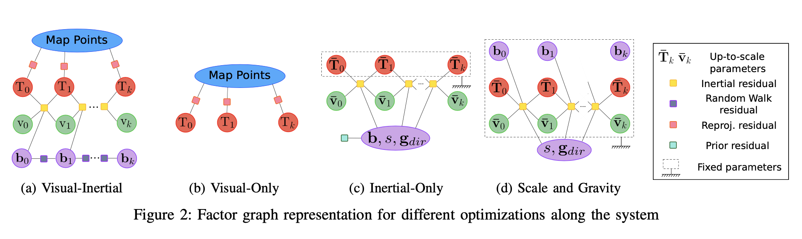
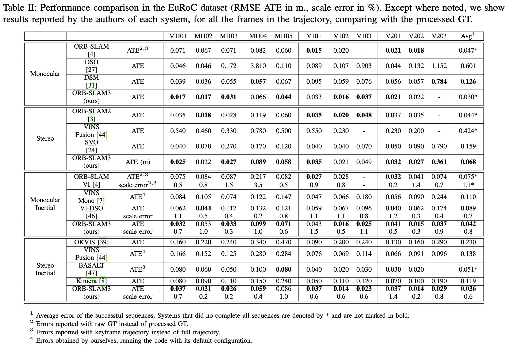

论文阅读 - ORB-SLAM3 尝鲜
本文由我在 3D 视觉工坊 首发，在这里转载。
ORB-SLAM3 是第一个同时具备纯视觉（visual）数据处理、视觉+惯性（visual-inertial）数据处理、和构建多地图（multi-map）功能，支持单目、双目以及 RGB-D 相机，同时支持针孔相机、鱼眼相机模型的 SLAM 系统。
ORB-SLAM3 论文概读
原论文：
ORB-SLAM3: An Accurate Open-Source Library for Visual, Visual-Inertial and Multi-Map SLAM
Carlos Campos, Richard Elvira, Juan J. Gómez Rodríguez, José M. M. Montiel, Juan D. Tardós
arXiv:2007.11898
代码开源地址：
YouTube 视频订阅：
这里放一个在 TUM-VI 数据集上， Stereo-Inertial 配置在室内外场景的视频 demo：
ORB-SLAM3 的第一版论文在这周四被作者发布到了 arXiv 上，在系统设置上来看，我认为 ORB-SLAM3 可以看作是作者组里近几年工作的一个大的总结的系统；基于之前的 ORB-SLAM2、ORB-SLAM-VI 进行扩展。
作者组的工作一脉相承，围绕着 ORB feature-based SLAM 做了非常多有重大意义的工作。本文其中在一些重要改进模块，如 IMU 初始化、multi-map system 等，是作者组里前几年的工作。我认为这是一篇更加偏向于系统性质的文章，把这么多工作串了起来，并且作者非常慷慨的把它开源了出来，非常赞！（估计又可以养活一大波人了 手动狗头）
概述
ORB-SLAM3 是第一个同时具备纯视觉（visual）数据处理、视觉+惯性（visual-inertial）数据处理、和构建多地图（multi-map）功能，支持单目、双目以及 RGB-D 相机，同时支持针孔相机、鱼眼相机模型的 SLAM 系统。
最大后验概率估计（Maximum-a-Posteriori，MAP）是基于紧耦合方法的 visual-inertial feature based SLAM 中贯彻的方法。作者提到，该篇论文的第一个主要创新点是在 IMU 初始化阶段引入 MAP。该初始化方法可以实时快速进行，鲁棒性上有很大的提升（在大的场景还是小的场景，不管室内还是室外环境均有较好表现），并且比当前的其他方法具有 2-5 倍的精确度的提升。
文章的第二个主要的创新点在于，基于一种召回率大大提高的 place recognition（也就是做回环检测，与历史数据建立联系）方法实现了一个多子地图（multi-maps）系统。这样，ORB-SLAM3 将在视觉信息缺乏的情况下更具有 long term 鲁棒性，当跟丢的时候，这个时候就会重新建一个子地图，并且在回环的时候与之前的子地图进行合并。与当前的大多数仅仅用了最近几秒信息的 VO 系统不同，**ORB-SLAM3 是第一个可以重用历史所有算法模块的所有信息的系统。（ORB-SLAM3 is the first system able to reuse in all the algorithm stages all previous information.）**这样的话，就可以做一些对性能提升很高的事情了，拿历史的 co-visible keyframes 一起做 BA，即使它们是来自很久之前的帧或者来自于其他的子地图。
作者通过实验证明，在所有 sensor 配置下，ORB-SLAM3 的鲁棒性与现在的发表的各大系统中相近，精度上有了显著的提高。尤其使用 “顶级配置” Stereo-Inertial SLAM，在 EuRoC 数据集的平均误差接近 3.6 cm，在一个偏向 AR/VR 场景的 TUM-VI 数据集的平均误差接近 9mm。
介绍
ORB-SLAM 系列是一个 feature-based 的 SLAM 系统，关于 feature-based、a geometric BA that minimizes feature reprojection error 这些与其他类型的区别、优缺点等就不在这里赘述。
随着 loop-closing 技术在一些 VO 系统中慢慢被引进，VO 与 SLAM 系统两者之间的差异正在逐渐模糊。但是在作者的理念中，SLAM 是：一个移动的对象建立起环境的地图并且实时计算自己在地图中的位姿；而 VO 的重点是估计自身的运动（ego-motion）。注意这点，map 部分被认为是 SLAM 中非常重要、具有灵魂东西。feature-based 的 map 给 SLAM 过程带来了很大的好处，主要体现在可以将与历史数据之间的约束加入到 BA 之中。这里指的历史数据关联，被作者分为了三类：
-
Short-term data association
该类型的 data association 主要聚焦于当前视野范围内的环境信息（也就是 feature）。这也是大多数 VO 系统使用的数据关联类型。这种类型的数据关联只聚焦于当下小窗口，所以说比如你在较长时间间隔到达同一地方两次，误差仍继续漂移。
-
Mid-term data association
在累积误差仍然很小的时候，当经过了已经 map 的地方发生了回环并且可以进行 match，这个时候即为 mid-term data association，把约束加到 BA 里进行优化从而消除误差。这也是 SLAM 系统比 VO 精度更高的一个关键点。
-
Long-term data association
不管当前的累积误差积累了多大，或者当此时的 feature 已经跟丢了，此时使用 place recognition 方法将当前观测与之前经过的场景里的信息进行匹配。long-term data association 允许重置累积误差并且通过 pose-graph 来优化 loop。这个功能被认为是 SLAM 在中大有回环的场景中提升精度的关键因素。
ORB-SLAM3 同时利用了这三种 data association，并且还加入了 multi-map data association。这样就允许来自之前的子地图的信息来进行 match 和 BA。这样以来实现 SLAM 的终极目标：建图并用来提供高精度的定位。
作者也提到，This is essentially a system paper。最大的贡献就是 ORB-SLAM3 它本身。The most complete and accurate visual，visual-inerial and multi-map SLAM system to date。具体的 contributions 如下：
-
A monocular and stereo visual-inertial SLAM system
一个完全基于 Maximum-a-Posteriori 的 SLAM 系统。并将其引入到 IMU 初始化吗阶段，这个是作者 ICRA 2020 的一篇论文：Inertial-only optimiza- tion for visual-inertial initialization 中详细提出的。作者将其添加到 VI-ORB-SLAM 系统中，并将其扩展到双目。作者的实验结果展示他们的 monocular and stereo visual-inertial system 非常的鲁棒，甚至在无回环的条件下显著比其他 visual-inertial 方法具有更好的精度。
-
High-recall place recognition
Recall，即召回率，在所有真实回环中，被正确检测出来的概率。以往的 SLAM 系统和 VO 系统通常使用 DB0W2。DB0W2 需要连续三帧在同一个地方匹配三个 keyframes 之后，才进行 geometric consistency。这样的代价还是比较大的，大大影响了系统的运行速度。作者提出了一个新的 place recognition。先在当前的候选关键帧中进行 geometrical consistency 的检测。然后 three covisible keyframes 进行 local consistency 检测（一般情况下已经在 map 里了）。这个策略计算量会高一些，但是会带来更高的召回率和地图的精度。
-
ORB-SLAM Atlas
本篇是第一个完整的可以处理 visual and visual-inertial 信息、具有单目与双目的 multi-map SLAM system。该 Atlas 中存有一系列未连接的地图，并且可以在其上进行 place recognition, camera relocalization, loop closure, accurate seamless map merging 操作。之前作者在 IROS 2019 针对 ORB-SLAM 做了一个纯视觉的 Atlas：ORBSLAM-atlas: a robust and accurate multi-map system。作者这里相当于就是加了一个新的 place recognition 方法，以及 inertial 信息。
-
An abstract camera representation
作者提供了两种相机模型以使得系统更加的容易被扩展：pinhole 和 fisheye （针孔相机模型与鱼眼相机模型）。
相关工作
作者分别从 Visual SLAM、Visual-Inertial SLAM、Multi-Map SLAM 几个方面描述相关工作，并做了一些与其他系统具体的实验对比，比如在 EuRoC 数据集的多场景操作，精度比 VINS-Mono 高 3.2 倍。具体这里不再赘述请移步原论文。
这里主要贴出作者与其他著名系统之间的对比：
系统概览
还是那句话：
It is a full multi-map and multi-session sys- tem able to work in pure visual or visual-inertial modes with monocular, stereo or RGB-D sensors, using pin-hole and fisheye camera models.
ORB-SLAM3 基于 ORB-SLAM2 和 VI-ORB-SLAM 构建。整个系统流程和 ORB-SLAM2 相似。主要分以下几个部分：
-
Atlas
它是一堆未合并的 map 的集合。分为 active map 和 non-active-map 两部分。active map 就是当前在用的 map，由 tracking thread 喂进数据，并由 local mapping thread 进行持续优化与扩展地图。剩下的就是 non-active map。Atlas 是基于作者构建的一个独特的 DBoW2 keyframes database 用来做重定位、回环与地图合并。
-
Tracking thread
处理进来的图像与 IMU 信息，并通过最小化重投影误差实时计算当前帧与地图的相对位姿。同样也进行 keyframe 的选择。在 visual-inertial 配置下，速度与 IMU 的 biases 也同时被优化与估计。
当跟丢之后，tracking thread 尝试利用 Atlas 进行重定位。如果成功了，将继续进行 tracking，需要的话进行切换 active map 的操作；若定位失败了（过了一个设定的时间），将重新初始化一个新的 active map 进行 tracking 与 mapping。
-
Local mapping thread
往 active map 中添加 keyframes 和 points，移走 outliers，在一个local window 中通过 visual 和 visual-inertial bundle adjustment 来 refine maps。IMU 的参数初始化也通过这个 mapping thread 进行 refine。
-
Loop and map merging thread
一直将active map 与整个 Atlas 基于 keyframe 的速度进行相似性度量。如果相似场景区域在当前的 active map 中，将进行 loop correction；当这个区域也属于其他地图，将进行合并操作并将合并后的地图置为当前的 active map。在进行 loop correction 的时候，一个 full BA 将再开一个线程进行，以来追求更高的精度，但这个并不要求实时性。
相机模型
ORB-SLAM3 想要在系统中将相机模型给抽象出来，将所有与相机模型相关的参数给剥离出来（如projection and unprojection functions, Jacobian, etc）形成单独的模块。作者实现了经典的 pinhole 针孔相机模型与 Kannala-Brandt 鱼眼相机模型。
Relocalization
ORB-SLAM 之前做重定位通过 ePnP 做的，但 ePnP 需要 pinhole。所以在这个系统中，为了兼顾鱼眼相机模型，采用了 MLPnP：Maximum Likelihood Perspective-n-Point algorithm。该算法以反投影的光线（rays）为输入，所以提供个反投影模型鱼眼相机就可以用了。
Non-rectified Stereo SLAM
目前很多双目系统都假设了一个很理想的双目：同样的焦距、成像平面在同一平面上、aligned with horizontal epipolar lines（这样一目的 feature 在另一目的同一行中寻找即可）。鱼眼的话，做 rectifying 视野范围会大大减小，丧失了其本身的优势。但是实际场景通常不是这么理想的，并且不依赖 rectifying，因此可以考虑：
- 双目之间采用一个常数 SE(3) 变化来描述两者变换关系。
- 双目有共同观测区域。
这样做三角化和 BA 比较高效，估计 6 自由度姿态也通过先在双目与 IMU 中的一个上做，其他的通过刚体位姿变换即可。
当处于双目共同观测区域的 landmarks 通过双目进行三角化，不再共同区域的就正常的 multi-view 进行三角化即可。
Visual-Inertial SLAM
这一块就比较 formulation 了。和常见的很像，IMU 预积分、构建残差项等等。
优化的状态变量：
IMU 预积分：
相机 pose 与 landmark 3D 点的视觉重投影误差：
最终优化：
几种情况下的因子图：

IMU Initialization、Map merging、Loop closure
关于剩下的 IMU 初始化、回环等模块，这些是大坑，后续在接下来的文章中详细补充。
实验结果
作者做了大量的实验对比，在大多数场景下 ORB-SLAM3 具有最好的结果。详细实验设置请移步原论文，这里贴出概括性的结果对比表格。
Single-session SLAM on EuRoC

Visual-Inertial SLAM on TUM-VI Benchmark

Multi-session SLAM
本博客所有文章除特别声明外，均采用 CC BY-SA 4.0 协议 ，转载请注明出处！联系作者。